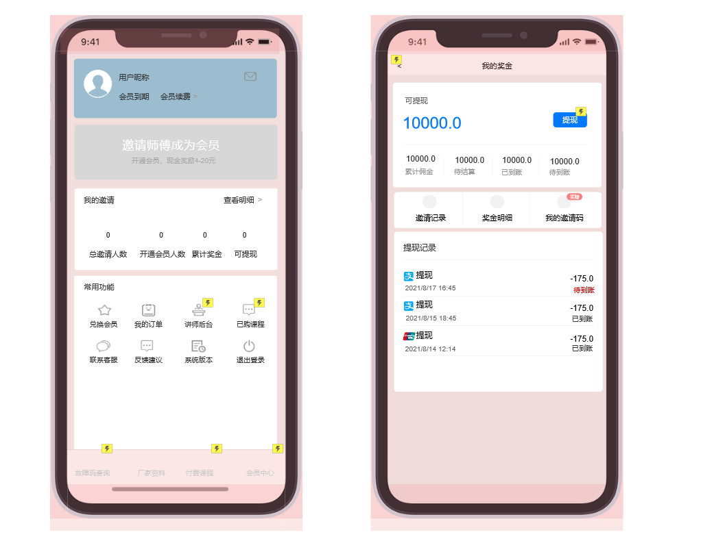
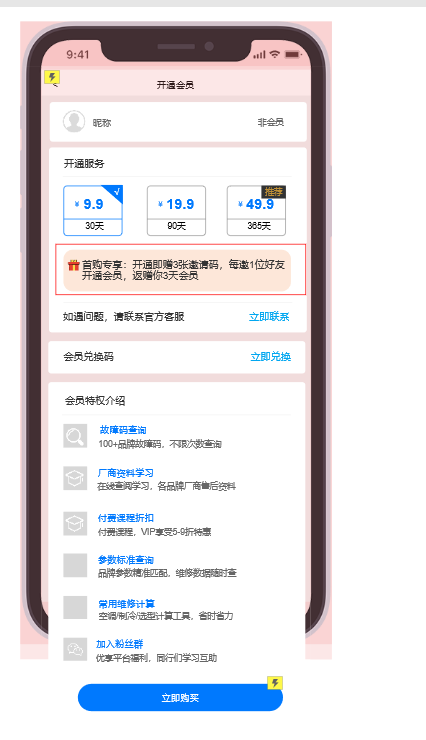
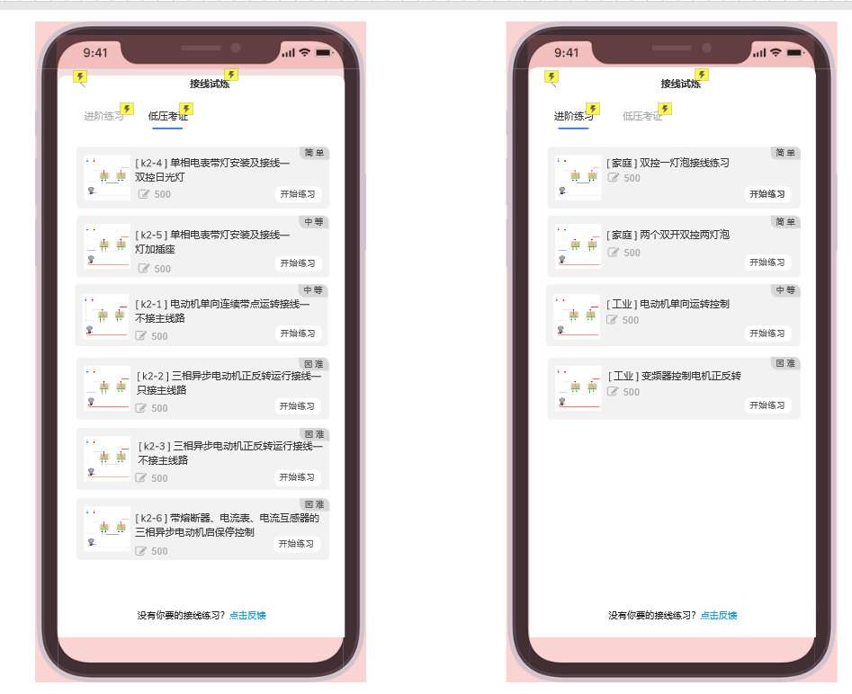
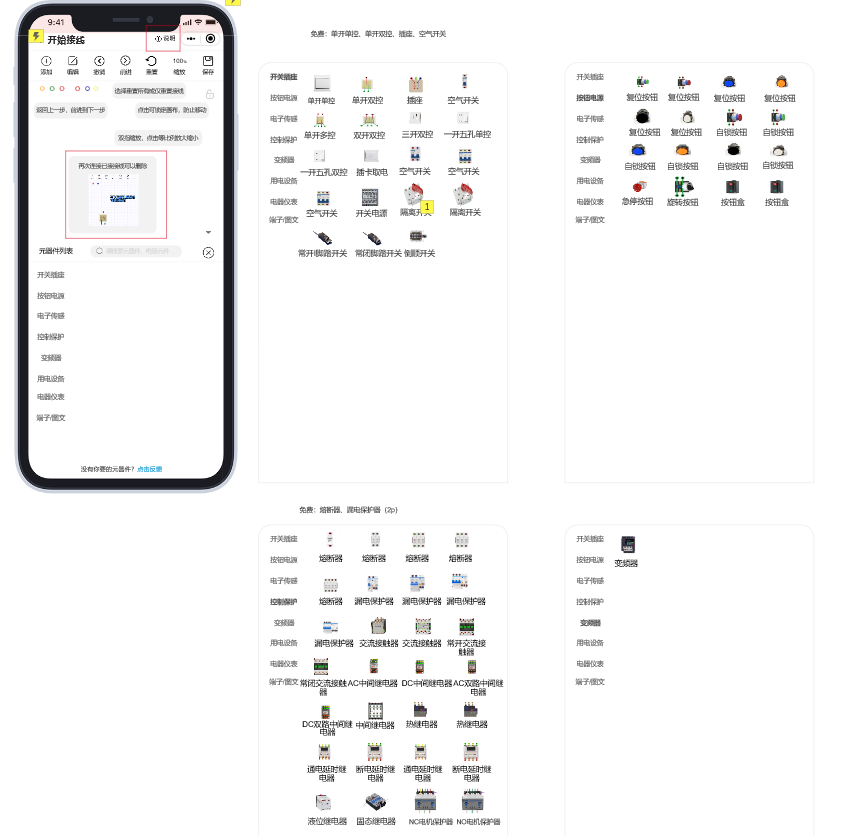

PROJECT 01
电工大师 · 电工工具与考证学习 App（迭代）
项目背景
面向电工从业者与考证学员的综合工具 App，核心由「计算器 + 题库 + 资料图册」三部分构成。迭代阶段需要在既有产品上补齐计算器种类、优化题库体验、扩展新能源（光伏储能）计算能力，并支持简繁体语言切换。
我的角色
需求梳理
整理迭代需求清单，按计算器、题库、资料分类标注优先级与备注。
原型与规则
输出计算页面交互原型，梳理输入项、公式释义、参考标准与异常提示口径。
题库体验设计
设计学习模式、错题集自动清除规则、收藏与纠错求助等学习闭环。
内容结构
规划基础知识、电气元件、仪表使用、电路图册等资料分类体系。
核心产出
- 电工计算器矩阵：欧姆定律、焦耳定律、电动机功率、感抗/容抗、RLC 谐振、三相零线电流、电容串/无功、变压器电阻温度换算、热电偶 / PT100 温度换算、进制转换，以及储能电池容量、PCS 选型、组串配置、往返效率、光伏组串与逆变器选型等新能源计算器。
- 题库学习闭环：顺序练习、模拟考试、收藏重点题、易错题汇总；错题集支持同一题连续答对 3 次自动移出，并保留手动删除与纠错、求助入口。
- 资料与标准查询：引脚定义、电缆电抗表、设备编号标准、基础原理与分类电路图册。
- 多语言：简体中文与繁體中文（港澳台）切换入口。




图注：电工大师会员中心、开通会员、接线试炼题库与元器件库原型
关键取舍
从「答题刷题」到「先看懂再练」
新增学习模式：直接展示答案与解析，降低新手理解门槛；考证模拟与错题练习保留独立路径，服务两类不同目标的用户。错题自动清除阈值取「连续答对 3 次」，既避免误删未掌握题目，又减少人工逐条清理成本。
计算结果先做工程口径说明，不做绝对承诺
每个计算器输出页配套参数释义、参考标准与修正说明（如高温/远距离线径升级、按铭牌为准），把理论估算与现场校核的边界写清楚，避免用户把估算值当成施工结论。